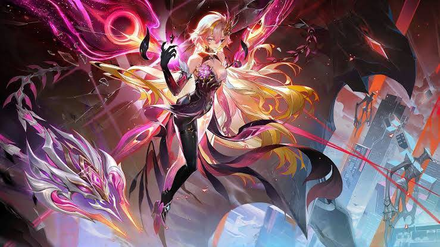

Шинээр тоглож эхэлсэн хүнд зориулсан гарын авлага

Баатраа сонго, чадварыг нь судалж, багтаа ялалт авчрах дараагийн алхмаа төлөвлө.
Mobile Legends бол хоёр баг тус бүр таван тоглогчтойгоор өрсөлддөг тоглоом. Дайсны гол баазыг устгасан баг ялна.
Жижиг цэргүүд, цамхаг болон ширэнгийн мангасуудыг устгаж алт, туршлага цуглуул. Алтаараа хэрэгтэй зүйлс худалдан авч баатраа хүчирхэгжүүлээрэй.
Замуудын хооронд мангасууд бий. Ширэнгийн үүрэгтэй тоглогч тэднийг устгаж алт, туршлага цуглуулаад, боломж гарвал замын тоглогчдод тусална.
Газрын зурагт Turtle, Lord хэмээх том мангасууд бий. Тэднийг ялбал багт давуу тал олдоно. Боломжтой үед багтайгаа хамт очиж тулалдаарай.
Товч дээр дарж баатрын үүрэг бүрийн тайлбарыг уншаарай:
Үүрэг болон тоглолтын үеэ сонгоод яг одоо юунд анхаарахаа хараарай.
Өөрчлөлт бүрийг Nerf, Buff эсвэл холимог өөрчлөлтийн хэсэг болгон тусад нь үзүүлэв. Нэг баатар Nerf болон Buff-ийг зэрэг авсан байж болно; тэмдэг нь тухайн өөрчлөлтийг хэлэхээс баатрыг бүхэлд нь үнэлээгүй. Горимын тусгай өөрчлөлт үндсэн тоглолтод хамаарахгүй.
Эх сурвалж: Moonton-ийн албан ёсны Patch 2.2.16 тэмдэглэл (2026.09.16). Монгол хэлээр товчилсон. Nerf болон Buff-ийг patch-ийн тэмдэглэгээ, горимын хүрээнд ялгав. Шинэ patch гармагц жагсаалтыг шинэчлэх шаардлагатай.
Зөвлөгөө 12 секунд тутамд өөрөө солигдоно.